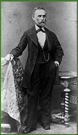

|  Móric Bloch (Mór Ballagi) wrote a pamphlet on the Jewish emancipation in 1840; as a supporter of Magyarization he was the first to translate the Torah into Hungarian, and he was the first Jewish member of the Hungarian Academy of Sciences. He converted to Protestantism in Tübingen in 1843 where he studied theology. He took part in the Hungarian Revolution and War of Independence, and after the fall he was interned. From the 1850s he was a lecturer at the Reformed Theological Academy even during these years he wrote a Hebrew grammar book. His main work as a linguist is A magyar nyelv teljes szótára (The Complete Dictionary of the Hungarian Language). | |||